mamba install pysparkOverview
I’ve noticed that Apache Spark is cited as a requirement on many data science job specs. My natural curiosity led me to the Introduction to PySpark course available through DataCamp which is a superb coding portal, offering slides, interactive lessons, projects, courses and career tracks. DataCamp was one of my first ports of call when I decided to upskill and make the transition from chartered accountancy to data science.
Today we will learn how to use Spark from Python! Spark is a tool for doing parallel computation with large datasets and it integrates well with Python. PySpark is the Python package that makes the magic happen. We’ll use this package to work with data about flights from Portland and Seattle. We’ll learn to wrangle this data and build a whole machine learning pipeline to predict whether or not flights will be delayed. Get ready to put some Spark in your Python code and dive into the world of high-performance machine learning!
1. Getting to know PySpark
In this section, we’ll learn how Spark manages data and how to read and write tables from Python.
What is Spark, anyway?
Spark is a platform for cluster computing. Spark lets you spread data and computations over clusters with multiple nodes (think of each node as a separate computer). Splitting up your data makes it easier to work with very large datasets because each node only works with a small amount of data.
As each node works on its own subset of the total data, it also carries out a part of the total calculations required, so that both data processing and computation are performed in parallel over the nodes in the cluster. It is a fact that parallel computation can make certain types of programming tasks much faster.
However, with greater computing power comes greater complexity.
Deciding whether or not Spark is the best solution for your problem takes some experience, but you can consider questions like:
- Is my data too big to work with on a single machine?
- Can my calculations be easily parallelized?Using Spark in Python
The first step in using Spark is connecting to a cluster.
In practice, the cluster will be hosted on a remote machine that’s connected to all other nodes. There will be one computer, called the master that manages splitting up the data and the computations. The master is connected to the rest of the computers in the cluster, which are called workers. The master sends the workers data and calculations to run, and they send their results back to the master.
When you’re just getting started with Spark it’s simpler to just run a cluster locally. Creating the connection is as simple as creating an instance of the SparkContext class. The class constructor takes a few optional arguments that allow you to specify the attributes of the cluster you’re connecting to.
An object holding all these attributes can be created with the SparkConf() constructor. Take a look at the documentation for all the details!
How do you connect to a Spark cluster from PySpark?
Create an instance of the SparkContext class.
Examining The SparkContext
You’ll probably notice that code takes longer to run than you might expect. This is because Spark is some serious software. It takes more time to start up than you might be used to. You may also find that running simpler computations might take longer than expected. That’s because all the optimizations that Spark has under its hood are designed for complicated operations with big data sets. That means that for simple or small problems Spark may actually perform worse than some other solutions!
Pyspark can be installed from the command line using:
For detailed installation guidance consult the Pyspark documentation.
# import SparkContext class
from pyspark import SparkContext as sc
from pyspark.sql import SparkSession# Create SparkSession
spark = SparkSession.builder.master("local[1]") \
.appName('SparkByExamples.com') \
.getOrCreate()
print('PySpark Version :'+spark.version)
print('PySpark Version :'+spark.sparkContext.version)Using DataFrames
Spark’s core data structure is the Resilient Distributed Dataset (RDD). This is a low level object that lets Spark work its magic by splitting data across multiple nodes in the cluster. However, RDDs are hard to work with directly, so in this course you’ll be using the Spark DataFrame abstraction built on top of RDDs.
The Spark DataFrame was designed to behave a lot like a SQL table (a table with variables in the columns and observations in the rows). Not only are they easier to understand, DataFrames are also more optimized for complicated operations than RDDs.
When you start modifying and combining columns and rows of data, there are many ways to arrive at the same result, but some often take much longer than others. When using RDDs, it’s up to the data scientist to figure out the right way to optimize the query, but the DataFrame implementation has much of this optimization built in!
To start working with Spark DataFrames, you first have to create a SparkSession object from your SparkContext. You can think of the SparkContext as your connection to the cluster and the SparkSession as your interface with that connection.
What is the advantage of Spark DataFrames over RDDs?
Operations using DataFrames are automatically optimized.
Creating a SparkSession
We’ve already created a SparkSession called spark, but what if you’re not sure there already is one?
Creating multiple SparkSessions and SparkContexts can cause issues.
It’s best practice to use the SparkSession.builder.getOrCreate() method. This returns an existing SparkSession if there’s already one in the environment, or creates a new one if necessary!
# Import SparkSession from pyspark.sql
from pyspark.sql import SparkSession
# Create my_spark
my_spark = SparkSession.builder.getOrCreate()
# Print my_spark
print(my_spark)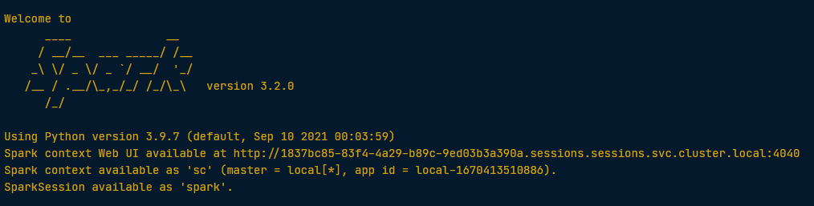
Viewing tables
Once we’ve created a SparkSession, we can start poking around to see what data is in our cluster! Our SparkSession has an attribute called catalog which lists all the data inside the cluster. This attribute has a few methods for extracting different pieces of information.
One of the most useful is the .listTables() method, which returns the names of all the tables in our cluster as a list.
# Print the tables in the catalog
print(spark.catalog.listTables())[Table(name=‘flights’, database=None, description=None, tableType=‘TEMPORARY’, isTemporary=True)]
Are you query-ious?
One of the advantages of the DataFrame interface is that you can run SQL queries on the tables in your Spark cluster.
As we saw above, one of the tables in our cluster is the flights table. This table contains a row for every flight that left Portland International Airport (PDX) or Seattle-Tacoma International Airport (SEA) in 2014 and 2015. Running a query on this table is as easy as using the .sql() method on your SparkSession. This method takes a string containing the query and returns a DataFrame with the results!
If you look closely, you’ll notice that the table flights is only mentioned in the query, not as an argument to any of the methods. This is because there isn’t a local object in our environment that holds that data, so it wouldn’t make sense to pass the table as an argument.
# get the first 10 rows of the flights table using SQL query
query = "FROM flights SELECT * LIMIT 10"
# assign SQL query
flights10 = spark.sql(query)
# Show the results
flights10.show()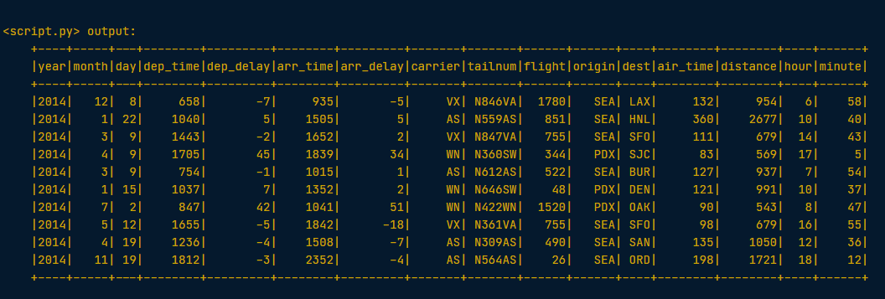
Pandafy a Spark DataFrame
Suppose we’ve run a query on our huge dataset and aggregated it down to something a little more manageable.
Sometimes it makes sense to then take that table and work with it locally using a tool like pandas. Spark DataFrames make that easy with the .toPandas() method. Calling this method on a Spark DataFrame returns the corresponding pandas DataFrame. It’s as simple as that!
This time the query counts the number of flights to each airport from SEA and PDX.
# Count the number of flights to each airport from SEA and PDX using a SQL query
query = "SELECT origin, dest, COUNT(*) as N FROM flights GROUP BY origin, dest"
# assign the query
flight_counts = spark.sql(query)
# Convert the results to a pandas DataFrame
pd_counts = flight_counts.toPandas()
# Print the head of pd_counts
print(pd_counts.head())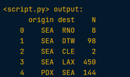
Put some Spark in your data
In the last section, we saw how to move data from Spark to pandas. However, maybe we want to go in the other direction, and put a pandas DataFrame into a Spark cluster! The SparkSession class has a method for this as well.
The .createDataFrame() method takes a pandas DataFrame and returns a Spark DataFrame.
The output of this method is stored locally, not in the SparkSession catalog. This means that we can use all the Spark DataFrame methods on it, but we can’t access the data in other contexts.
For example, a SQL query (using the .sql() method) that references our DataFrame will throw an error. To access the data in this way, we have to save it as a temporary table. We can do this using the .createTempView() Spark DataFrame method, which takes as its only argument the name of the temporary table you’d like to register. This method registers the DataFrame as a table in the catalog, but as this table is temporary, it can only be accessed from the specific SparkSession used to create the Spark DataFrame.
There is also the method .createOrReplaceTempView(). This safely creates a new temporary table if nothing was there before, or updates an existing table if one was already defined. We’ll use this method to avoid running into problems with duplicate tables.
Check out the diagram below to see all the different ways our Spark data structures interact with each other:
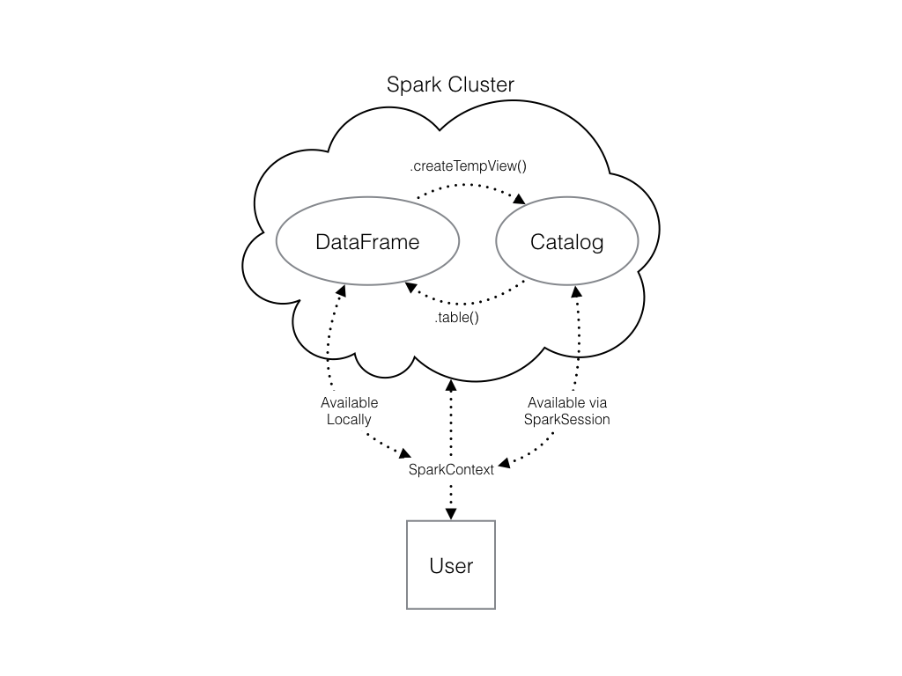
# Create a pandas Dataframe of random numbers
pd_temp = pd.DataFrame(np.random.random(10))
# Create a Spark DataFrame from the pandas DataFrame
spark_temp = spark.createDataFrame(pd_temp)
# Examine the list of tables in our Spark cluster and verify that the new DataFrame is not present
print(spark.catalog.listTables())
# Register the newly created Spark DataFrame as a temporary table - name it "temp"
spark_temp.createOrReplaceTempView("temp")
# Examine the list of tables in the catalog again
print(spark.catalog.listTables())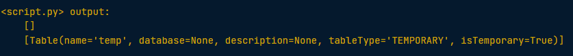
Dropping the middle man
Now we know how to put data into Spark via pandas, but you’re probably wondering why deal with pandas at all? Wouldn’t it be easier to just read a text file straight into Spark? Of course it would! Luckily, our SparkSession has a .read attribute which has several methods for reading different data sources into Spark DataFrames. Using these we can create a DataFrame from a .csv file just like with regular pandas DataFrames!
The variable file_path is a string with the path to the file airports.csv. This file contains information about different airports all over the world.
# Set the path
file_path = "/usr/local/share/datasets/airports.csv"
# Read in the airports data creating a Spark DataFrame
airports = spark.read.csv(file_path, header=True)
# Show the data
airports.show()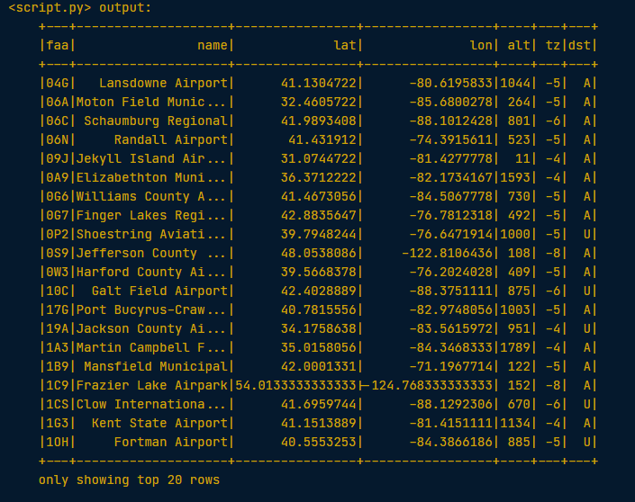
2. Manipulating data
In this section, we’ll learn about the pyspark.sql module, which provides optimized data queries to your Spark session.
Creating columns
In this section, we’ll learn how to use the methods defined by Spark’s DataFrame class to perform common data operations.
Let’s look at performing column-wise operations. In Spark we can do this using the .withColumn() method, which takes two arguments. First, a string with the name of our new column, and second the new column itself. The new column must be an object of class Column. Creating one of these is as easy as extracting a column from our DataFrame using df.colName.
Updating a Spark DataFrame is somewhat different than working in pandas because the Spark DataFrame is immutable. This means that it can’t be changed, and so columns can’t be updated in place. Thus, all these methods return a new DataFrame.
To overwrite the original DataFrame we must reassign the returned DataFrame using the method like so:
df = df.withColumn("newCol", df.oldCol + 1)The above code creates a DataFrame with the same columns as df plus a new column, newCol, where every entry is equal to the corresponding entry from oldCol, plus one. To overwrite an existing column, just pass the name of the column as the first argument!
# Use the spark.table() method to create a DataFrame containing the values of the flights table
flights = spark.table("flights")
# Add a new column "duration_hrs" - the column air_time includes minutes
flights = flights.withColumn("duration_hrs", flights.air_time/60)
# Show the head
flights.show()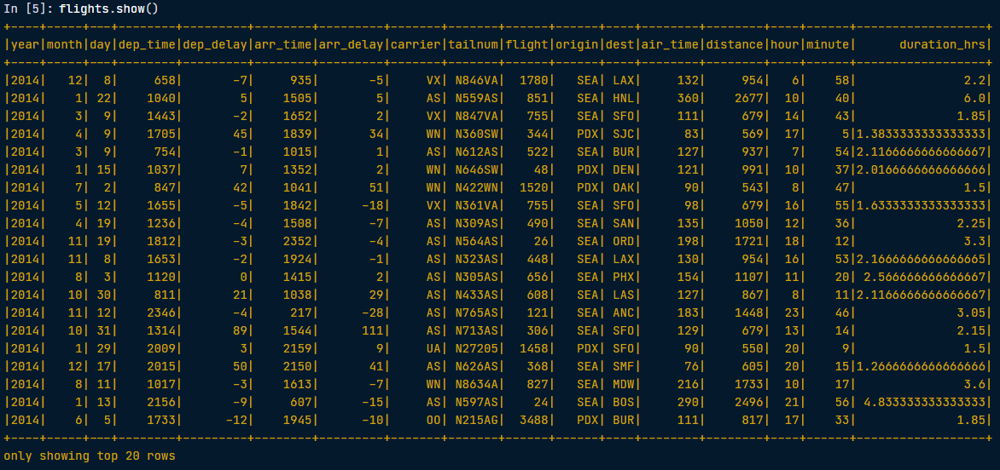
SQL - SELECT, FROM
A SQL query returns a table derived from one or more tables contained in a database. Every SQL query is made up of commands that tell the database what you want to do with the data. The two commands that every query has to contain are SELECT and FROM.
The SELECT command is followed by the columns we want in the resulting table.
The FROM command is followed by the name of the table that contains those columns. The minimal SQL query is:
SELECT * FROM my_table;The * selects all columns, so this returns the entire table named my_table.
Similar to .withColumn(), we can do column-wise computations within a SELECT statement. For example,
SELECT origin, dest, air_time / 60 FROM flights;returns a table with the origin, destination, and duration in hours for each flight.
SQL - filtering
Another commonly used command is *WHERE. This command filters the rows of the table based on some logical condition you specify. The resulting table contains the rows where our condition is true. For example, if we had a table of students and grades we could do:
SELECT * FROM students
WHERE grade = 'A';to select all the columns and the rows containing information about students who got As.
SQL - aggregation
Another common database task is aggregation. That is, reducing our data by breaking it into chunks and summarizing each chunk. This is done in SQL using the GROUP BY command. This command breaks our data into groups and applies a function from our SELECT statement to each group.
For example, if we wanted to COUNT the number of flights from each of two origin destinations, we could use the query
SELECT COUNT(*) FROM flights
GROUP BY origin;GROUP BY origin tells SQL that we want the output to have a row for each unique value of the origin column. The SELECT statement selects the values we want to populate each of the columns. Here, we want to COUNT() every row in each of the groups.
It’s possible to GROUP BY more than one column. When we do this, the resulting table has a row for every combination of the unique values in each column. The following query counts the number of flights from SEA and PDX to every destination airport:
SELECT origin, dest, COUNT(*) FROM flights
GROUP BY origin, dest;The output will have a row for every combination of the values in origin and dest (i.e. a row listing each origin and destination that a flight flew to). There will also be a column with the COUNT() of all the rows in each group.
Filtering Data using Spark
Let’s now talk about the analogous operations using Spark DataFrames.
Let’s take a look at the .filter() method. As you might suspect, this is the Spark counterpart of SQL’s WHERE clause. The .filter() method takes either an expression that would follow the WHERE clause of a SQL expression as a string, or a Spark Column of boolean (True/False) values.
For example, the following two expressions will produce the same output:
flights.filter("air_time > 120").show()
flights.filter(flights.air_time > 120).show()Notice that in the first case, we pass a string to .filter(). In SQL, we would write this filtering task as SELECT * FROM flights WHERE air_time > 120. Spark’s .filter() can accept any expression that could go in the WHERE clause of a SQL query (in this case, “air_time > 120”), as long as it is passed as a string. Notice that in this case, we do not reference the name of the table in the string – as we wouldn’t in the SQL request.
In the second case, we actually pass a column of boolean values to .filter(). Remember that flights.air_time > 120 returns a column of boolean values that has True in place of those records in flights.air_time that are over 120, and False otherwise.
# Filter all flights that flew over 1000 miles by passing a string
long_flights1 = flights.filter("distance > 1000").show()
# Filter flights that flew over 1000 miles by passing a column of boolean values
long_flights2 = flights.filter(flights.distance > 1000).show()Both methods return the same output:
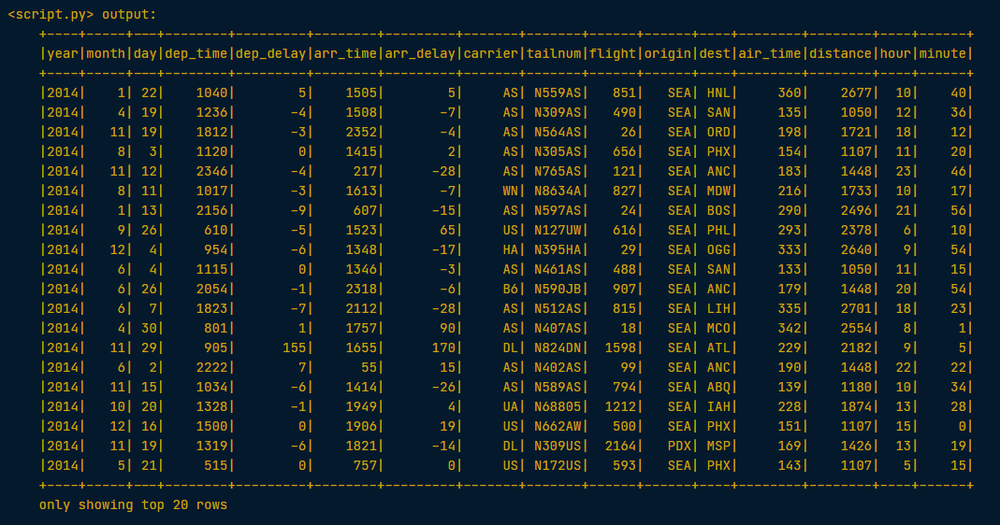
Selecting using Spark
The Spark variant of SQL’s SELECT is the .select() method. This method takes multiple arguments - one for each column we want to select. These arguments can either be the column name as a string (one for each column) or a column object (using the df.colName syntax). When we pass a column object, we can perform operations like addition or subtraction on the column to change the data contained in it, much like inside .withColumn().
The difference between .select() and .withColumn() methods is that .select() returns only the columns you specify, while .withColumn() returns ALL the columns of the DataFrame in addition to the one we defined.
It’s often a good idea to drop columns you don’t need at the beginning of an operation so that you’re not dragging around extra data as you’re wrangling
In this case, we would use .select() and not .withColumn().
# Select the columns "tailnum", "origin", and "dest" from flights by passing the column names as strings
selected1 = flights.select("tailnum", "origin", "dest")
#Select the columns "origin", "dest", and "carrier" using the df.colName syntax and then filter the result
temp = flights.select(flights.origin, flights.dest, flights.carrier)
# Define first filter
filterA = flights.origin == "SEA"
# Define second filter
filterB = flights.dest == "PDX"
# Filter the data, first by filterA then by filterB and show result
selected2 = temp.filter(filterA).filter(filterB).show()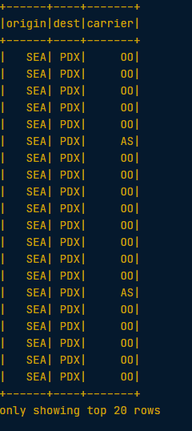
Similar to SQL, we can also use the .select() method to perform column-wise operations. When we’re selecting a column using the df.colName notation, we can perform any column operation and the .select() method will return the transformed column. For example,
flights.select(flights.air_time/60)returns a column of flight durations in hours instead of minutes. We can also use the .alias() method to rename a column you’re selecting. So if you wanted to .select() the column duration_hrs (which isn’t in oour DataFrame) we could do
flights.select((flights.air_time/60).alias("duration_hrs"))The equivalent Spark DataFrame method .selectExpr() takes SQL expressions as a string:
flights.selectExpr("air_time/60 as duration_hrs")with the SQL as keyword being equivalent to the .alias() method. To select multiple columns, we can pass multiple strings.
# Calculate average speed and use the .alias() method to name the column
avg_speed = (flights.distance/(flights.air_time/60)).alias("avg_speed")
# Select the required columns
speed1 = flights.select("origin", "dest", "tailnum", avg_speed).show()
# Create the same table using an SQL expression
speed2 = flights.selectExpr("origin", "dest", "tailnum", "distance/(air_time/60) as avg_speed").show()Both methods return the same output:
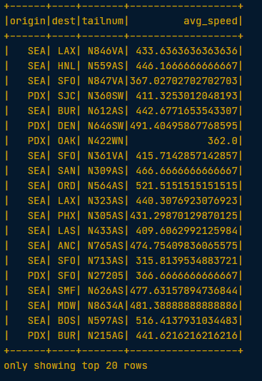
Aggregating using Spark
All of the common aggregation methods, like .min(), .max(), and .count() are GroupedData methods. These are created by calling the .groupBy() DataFrame method. All we have to do to use these functions is call that method on your DataFrame. For example, to find the minimum value of a column, col, in a DataFrame, df, we could do
df.groupBy().min("col").show()This creates a GroupedData object (so we can use the .min() method), then finds the minimum value in col, and returns it as a DataFrame.
# Find the length of the shortest flight that left from PDX in terms of distance
flights.filter(flights.origin == "PDX").groupBy().min("distance").show()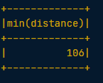
# Find the longest flight from SEA in terms of air time
flights.filter(flights.origin == "SEA").groupBy().max("air_time").show()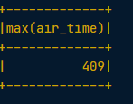
To get us familiar with more of the built in aggregation methods, here’s a few more exercises involving the flights table!
# Get the average air time of Delta Airlines flights (where the carrier column has the value "DL") that left SEA - using the .avg() method
flights.filter(flights.carrier == "DL").filter(flights.origin == "SEA").groupBy().avg("air_time").show()
# get the total number of hours all planes in this dataset spent in the air - using the .sum() method
flights.withColumn("duration_hrs", flights.air_time/60).groupBy().sum("duration_hrs").show()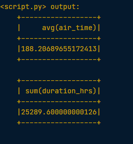
Grouping and Aggregating using Spark
Part of what makes aggregating so powerful is the addition of groups. PySpark has a whole class devoted to grouped data frames: pyspark.sql.GroupedData. We’ve learned how to create a grouped DataFrame by calling the .groupBy() method on a DataFrame with no arguments.
Now we’ll see that when we pass the name of one or more columns in our DataFrame to the .groupBy() method, the aggregation methods behave like when we use a GROUP BY statement in a SQL query!
# Create a DataFrame that is grouped by the column tailnum
by_plane = flights.groupBy("tailnum")
# se the .count() method with no arguments to count the number of flights each plane made.
by_plane.count().show()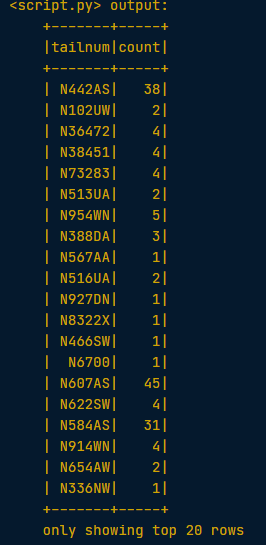
# Create a DataFrame that is grouped by the column origin
by_origin = flights.groupBy("origin")
# Find the .avg() of the air_time column to find average duration of flights from PDX and SEA.
by_origin.avg("air_time").show()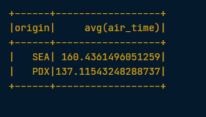
In addition to the GroupedData methods we’ve already seen, there is also the .agg() method. This method lets us pass an aggregate column expression that uses any of the aggregate functions from the pyspark.sql.functions submodule.
This submodule contains many useful functions for computing things like standard deviations. All the aggregation functions in this submodule take the name of a column in a GroupedData table.
# Import the submodule pyspark.sql.functions
import pyspark.sql.functions as F
# Create a GroupedData table, grouped by month and dests. Refer to the two columns by passing both strings as separate arguments.
by_month_dest = flights.groupBy("month", "dest")
# Get the average dep_delay in each month for each destination, by using the .avg() method
by_month_dest.avg("dep_delay").show()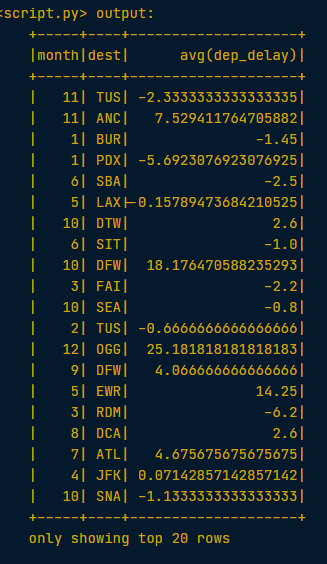
# Find the standard deviation of dep_delay by using the .agg() method with the function F.stddev()
by_month_dest.agg(F.stddev("dep_delay")).show()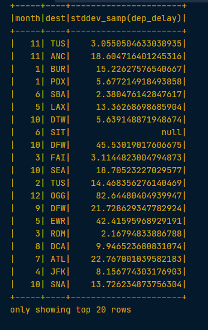
Joining using Spark
Another very common data operation is the join. Joins are a whole topic unto themselves, so in this blog we’ll just look at simple joins. If you’d like to learn more about joins, you can take a look here. A join will combine two different tables along a column that they share. This column is called the key. Examples of keys here include the tailnum and carrier columns from the flights table.
For example, suppose that we want to know more than just the tail number of the plane that flew a flight. This information isn’t in the flights table because the same plane flies many different flights over the course of two years, so including this information in every row would result in a lot of duplication. To avoid this, we’d have a second table that has only one row for each plane and whose columns list all the information about the plane, including its tail number. You could call this table planes.
When we join the flights table to this table of airplane information, we’re adding all the columns from the planes table to the flights table. To fill these columns with information, we’ll look at the tail number from the flights table and find the matching one in the planes table, and then use that row to fill out all the new columns.
Now we’ll have a much bigger table than before, but now every row has all information about the plane that flew that flight!
In PySpark, joins are performed using the DataFrame method .join(). This method takes three arguments
- the second DataFrame that you want to join with the first one.
- on - the name of the key column(s) as a string. The names of the key column(s) must be the same in each table.
- how - specifies the kind of join to perform.
# Examine the airports DataFrame
airports.show()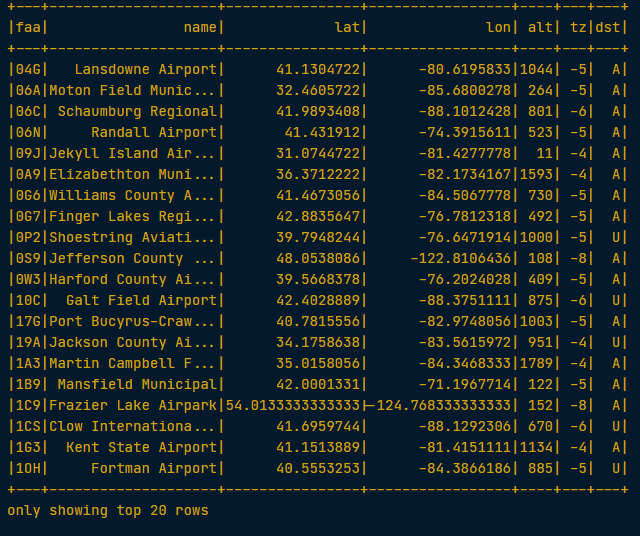
Note
The faa column refers to the alphanumeric code identifying United States airports. The dest column of the flights DataFrame has this same information and will therefore be our key but it is in a different format (the typical airport ‘LAX’ format).
Prior to joining we must therefore rename the faa column.
# Rename the faa column to enable joining
airports = airports.withColumnRenamed("faa", "dest")
# Join the flights to the airports DataFrame
# First argument should be the other DatafRame
# Second argument (on) should be the key
# Thirs argument (how) should be 'leftover'
flights_with_airports = flights.join(airports, on="dest", how="leftouter")
# Examine the new DataFrame
flights_with_airports.show()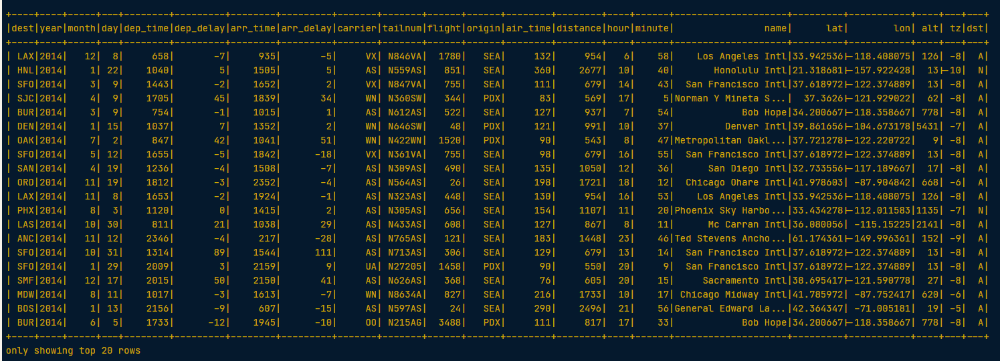
3. Getting started with machine learning pipelines
PySpark has built-in, cutting-edge machine learning routines, along with utilities to create full machine learning pipelines. We’ll learn about them in this section.
At the core of the pyspark.ml module are the Transformer and Estimator classes. Almost every other class in the module behaves similarly to these two basic classes.
Transformer classes have a .transform() method that takes a DataFrame and returns a new DataFrame; usually the original one with a new column appended. For example, you might use the class Bucketizer to create discrete bins from a continuous feature or the class PCA to reduce the dimensionality of your dataset using principal component analysis.
Estimator classes all implement a .fit() method. These methods also take a DataFrame, but instead of returning another DataFrame they return a model object. This can be something like a StringIndexerModel for including categorical data* saved as strings in your models, or a RandomForestModel that uses the random forest algorithm for classification or regression.
Join the DataFrames
In the next two sections we’ll be working towards building a model that predicts whether or not a flight will be delayed based on the flights data we’ve been working with. This model will also include information about the plane that flew the route, so the first step is to join the two tables: flights and planes!
# Rename year column of planes to avoid duplicate column names
planes = planes.withColumnRenamed("year","plane_year")
# Join the planes table to the flights table on tailnum
model_data = flights.join(planes, on="tailnum", how="leftouter")Data types
What kind of data does Spark need for modeling?
Doubles
Before we start modeling, it’s important to know that Spark only handles numeric data. That means all of the columns in our DataFrame must be either integers or decimals (called ‘doubles’ in Spark). When we imported our data, we let Spark guess what kind of information each column held. Unfortunately, Spark doesn’t always guess right and you can see that some of the columns in our DataFrame are strings containing numbers as opposed to actual numeric values.
To find out the datatype of each of the columns of a dataset use .dtypes
model_data.dtypes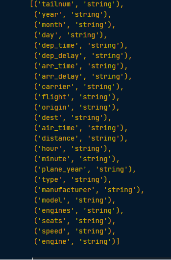
As we can see all columns are of type ‘string’.
To remedy this, we can use the .cast() method in combination with the .withColumn() method. It’s important to note that .cast() works on columns, while .withColumn() works on DataFrames.
The only argument we need to pass to .cast() is the kind of value we want to create, in string form. For example, to create integers, we’ll pass the argument “integer” and for decimal numbers you’ll use “double”.
We can put this call to .cast() inside a call to .withColumn() to overwrite the already existing column, just like we did in the previous section.
String to integer
Now we’ll use the .cast() method to convert all the appropriate columns from our DataFrame model_data to integers! To convert the type of a column using the .cast() method, we can write code like this:
dataframe = dataframe.withColumn("col", dataframe.col.cast("new_type")# Cast the columns to integers
model_data = model_data.withColumn("arr_delay", model_data.arr_delay.cast("integer"))
model_data = model_data.withColumn("air_time", model_data.air_time.cast("integer"))
model_data = model_data.withColumn("month", model_data.month.cast("integer"))
model_data = model_data.withColumn("plane_year", model_data.plane_year.cast("integer"))
model_data.dtypes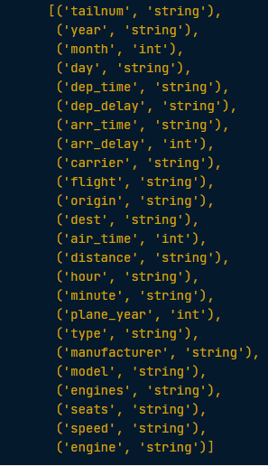
We can see that the our arr_delay, air_time, month, and plane_year columns are now of the required type - ‘int’.
Create a new column
Now we have converted the column plane_year to an integer. This column holds the year each plane was manufactured. However, our model will use the planes’ age, which is slightly different from the year it was made!
# Create the column plane_age by subtracting the year of manufacture from the year of the flight
model_data = model_data.withColumn("plane_age", model_data.year - model_data.plane_year)Making a Boolean
Consider that we’re modeling a yes or no question: is the flight late? However, our data contains the arrival delay in minutes for each flight. Thus, we’ll need to create a boolean column which indicates whether the flight was late or not!
# Create an is_late column
model_data = model_data.withColumn("is_late", model_data.arr_delay > 0)
# Convert our is_late column to an integer
model_data = model_data.withColumn("label",model_data.is_late.cast("integer"))
# Remove missing values
model_data = model_data.filter("arr_delay is not NULL and dep_delay is not NULL and air_time is not NULL and plane_year is not NULL")
Warning
“label” is the default name for the response variable in Spark’s machine learning routines
Great. Now we’ve defined the label column - the column that we’re going to use as the outcome in our model.
Strings and factors
As we know, Spark requires numeric data for modeling. So far this hasn’t been an issue; even boolean columns can easily be converted to integers without any trouble. But we’ll also be using the airline and the plane’s destination as features in our model. These are coded as strings and there isn’t any obvious way to convert them to a numeric data type.
Fortunately, PySpark has functions for handling this built into the pyspark.ml.features submodule. WE can create what are called ‘one-hot vectors’ to represent the carrier and the destination of each flight. A one-hot vector is a way of representing a categorical feature where every observation has a vector in which all elements are zero except for at most one element, which has a value of one (1).
Each element in the vector corresponds to a level of the feature, so it’s possible to tell what the right level is by seeing which element of the vector is equal to one (1).
The first step to encoding our categorical feature is to create a StringIndexer. Members of this class are Estimators that take a DataFrame with a column of strings and map each unique string to a number. Then, the Estimator returns a Transformer that takes a DataFrame, attaches the mapping to it as metadata, and returns a new DataFrame with a numeric column corresponding to the string column.
The second step is to encode this numeric column as a one-hot vector using a OneHotEncoder. This works exactly the same way as the StringIndexer by creating an Estimator and then a Transformer.
The end result is a column that encodes our categorical feature as a vector that’s suitable for machine learning routines! This may seem complicated, but don’t worry! All we have to remember is that we need to create a StringIndexer and a OneHotEncoder, and the Pipeline will take care of the rest.
Why do you have to encode a categorical feature as a one-hot vector?
Spark can only model numeric features.
StringIndexer and OneHotEncoder
Let’s now create a StringIndexer and a OneHotEncoder to code the carrier column. To do this, we’ll call the class constructors with the arguments inputCol and outputCol.
- the inputCol is the name of the column you want to index or encode;
- the outputCol is the name of the new column that the Transformer should create
# Create a StringIndexer for the carrier column
carr_indexer = StringIndexer(inputCol="carrier",outputCol="carrier_index")
# Create a OneHotEncoder
carr_encoder = OneHotEncoder(inputCol="carrier_index",outputCol="carrier_fact")Now the carrier information is in the correct format for inclusion in our model. Let’s do the same thing for the dest column:
# Create a StringIndexer for the dest column
dest_indexer = StringIndexer(inputCol="dest",outputCol="dest_index")
# Create a OneHotEncoder
dest_encoder = OneHotEncoder(inputCol="dest_index",outputCol="dest_fact")Assemble a vector
The last step in the Pipeline is to combine all of the columns containing our features into a single column. This has to be done before modeling can take place because every Spark modeling routine expects the data to be in this form. We can do this by storing each of the values from a column as an entry in a vector. Then, from the model’s point of view, every observation is a vector that contains all of the information about it and a label that tells the modeler what value that observation corresponds to.
Because of this, the pyspark.ml.feature submodule contains a class called VectorAssembler. This Transformer takes all of the columns you specify and combines them into a new vector column.
# Create a VectorAssembler with or inputCols as a list, and outputCol name "features"
vec_assembler = VectorAssembler(inputCols=["month", "air_time", "carrier_fact", "dest_fact", "plane_age"], outputCol="features")Create the Pipeline
Pipeline is a class in the pyspark.ml module that combines all the Estimators and Transformers that you’ve already created. This lets you reuse the same modeling process over and over again by wrapping it up in one simple object.
# Import Pipeline
from pyspark.ml import Pipeline
# Call the pipeline with keyword argument "stages"
flights_pipe = Pipeline(stages=[dest_indexer, dest_encoder, carr_indexer, carr_encoder, vec_assembler])
Important
stages should be a list holding all the stages you want your data to go through in the pipeline.
Excellent, we now have a fully reproducible machine learning pipeline!
Test vs. Train
After we’ve cleaned our data and knocked it into shape for modeling, one of the most important steps is to split the data into a test set and a train set. After that, we don’t touch our test data until we think we have a good model! As we’re building models and forming hypotheses, we can test them on our training data to get an idea of their performance.
Once we’ve got our favorite model, we can see how well it predicts the new data in our test set. This never-before-seen data will give us a much more realistic idea of our model’s performance in the real world when we’re trying to predict or classify new data.
In Spark it’s important to make sure we split the data after all the transformations. This is because operations like StringIndexer don’t always produce the same index even when given the same list of strings.
Why is it important to use a test set in model evaluation?
By evaluating your model with a test set you can get a good idea of performance on new data.
Transform the data
We’re finally ready to pass our data through the Pipeline we created!
# Fit and transform the model_data
piped_data = flights_pipe.fit(model_data).transform(model_data)Split the data
Now that we’ve done all your manipulations, the last step before modeling is to split the data!
# Split the data into a training set (60%) and test set (40%)
training, test = piped_data.randomSplit([.6, .4])
Important
The train:test split is implemented by passing a list containing the desired split in decimal format
Now we are ready to start fitting the model.
4. Model tuning and selection
In this last section, we’ll apply what we’ve learned to create a model that predicts which flights will be delayed.
What is logistic regression?
The model we’ll be fitting in this section is called a logistic regression. This model is very similar to a *linear regression, but instead of predicting a numeric variable, it predicts the probability (between 0 and 1) of an event.
To use this as a classification algorithm, all we have to do is assign a cutoff point to these probabilities. If the predicted probability is above the cutoff point, we classify that observation as a ‘yes’ (in this case, the flight being late), if it’s below, we classify it as a ‘no’!
We’ll tune this model by testing different values for several hyperparameters. A hyperparameter is just a value in the model that’s not estimated from the data, but rather is supplied by the user to maximize performance.
Create the modeler
# Import LogisticRegression
from pyspark.ml.classification import LogisticRegression
# Instantiate a LogisticRegression Estimator
lr = LogisticRegression()Cross validation
In the next few exercises we’ll be tuning our logistic regression model using a procedure called k-fold cross validation. This is a method of estimating the model’s performance on unseen data (like our test DataFrame). It works by splitting the training data into a few different partitions. The exact number is up to you, but we’ll be using PySpark’s default value of three. Once the data is split up, one of the partitions is set aside, and the model is fit to the others. Then the error is measured against the held out partition. This is repeated for each of the partitions, so that every block of data is held out and used as a test set exactly once. Then the error on each of the partitions is averaged. This is called the cross validation error of the model, and is a good estimate of the actual error on the held out data.
We’ll be using cross validation to choose the hyperparameters by creating a grid of the possible pairs of values for the two hyperparameters, elasticNetParam and regParam, and using the cross validation error to compare all the different models so we can choose the best one!
What does cross validation allow you to estimate?
The model’s error on held out data.
Create the evaluator
The first thing we need when doing cross validation for model selection is a way to compare different models. Luckily, the pyspark.ml.evaluation submodule has classes for evaluating different kinds of models. Our model is a binary classification model, so we’ll be using the BinaryClassificationEvaluator from the pyspark.ml.evaluation module.
This evaluator calculates the area under the ROC. This is a metric that combines the two kinds of errors a binary classifier can make (false positives and false negatives) into a simple number. We’ll learn more about this later!
# Import the evaluation submodule
import pyspark.ml.evaluation as evals
# Create a BinaryClassificationEvaluator
evaluator = evals.BinaryClassificationEvaluator(metricName="areaUnderROC")Make a grid
Next, we need to create a grid of values to search over when looking for the optimal hyperparameters. The submodule pyspark.ml.tuning includes a class called ParamGridBuilder that does just that (maybe you’re starting to notice a pattern here; PySpark has a submodule for just about everything!).
WE’ll need to use the .addGrid() and .build() methods to create a grid that we can use for cross validation. The .addGrid() method takes a model parameter (an attribute of the model Estimator, lr, that we created earlier) and a list of values that we want to try. The .build() method takes no arguments, it just returns the grid that we’ll use later.
# Import the tuning submodule
import pyspark.ml.tuning as tune
# Create the parameter grid
grid = tune.ParamGridBuilder()
# Add the learning rate hyperparameters
grid = grid.addGrid(lr.regParam, np.arange(0, .1, .01))
The lr. regParam parameters are set by using np.arange which creates a list of numbers (from, increment, to) which give us the learning rate values to try.
# Add the elasticNetParam hyperparameter
grid = grid.addGrid(lr.elasticNetParam, [0, 1])
Elastic net regularization uses a weighted combination of LASSO (L1) and Ridge (L2). The specified value relates to the weighting applied to L1 regularization, so a value of 0 would be pure L2, and a value of 1 would be pure Ridge. Any values in between result in a blend of the two.
# Build the grid
grid = grid.build()Make the validator
The submodule pyspark.ml.tuning also has a class called CrossValidator for performing cross validation. This Estimator takes the modeler we want to fit, the grid of hyperparameters we created, and the evaluator we want to use to compare our models.
We’ll create the CrossValidator by passing it the logistic regression Estimator lr, the parameter grid, and the evaluator we created earlier.
# Create the CrossValidator
cv = tune.CrossValidator(estimator=lr,
estimatorParamMaps=grid,
evaluator=evaluator
)Fit the model(s)
Unfortunately, cross validation is a very computationally intensive procedure. To do this locally you would use the code:
# Fit cross validation models
models = cv.fit(training)
# Extract the best model
best_lr = models.bestModelRemember, the training data is called training and we’re using lr to fit a logistic regression model. Cross validation selected the parameter values regParam=0 and elasticNetParam=0 as being the best. These are the default values, so we don’t need to do anything else with lr before fitting the model.
# Extract the best model
best_lr = lr.fit(training)
# Print best_lr to verify it's an object of the LogisticRegressionModel class
print(best_lr)LogisticRegressionModel: uid=LogisticRegression_2bd11bb498b4, numClasses=2, numFeatures=83
Evaluating binary classifiers
We’ll be using a common metric for binary classification algorithms call the AUC, or area under the curve. In this case, the curve is the ROC, or receiver operating curve. For our purposes, the closer the AUC is to one (1), the better the model is!
If you’ve created a perfect binary classification model, what would the AUC be?
1
Evaluate the model
It’s finally time to test our model on the test data we set aside earlier. We can use the same evaluator we made to fit the model.
# Use the model to generate predictions on the test set
test_results = best_lr.transform(test)
# Evaluate the predictions to compute the AUC
print(evaluator.evaluate(test_results))0.7123313100891033
Key Takeaways
l learned how to use Spark from Python to wrangle data about flights from Portland and Seattle and using this data, build a machine learning pipeline to predict whether or not flights will be delayed.